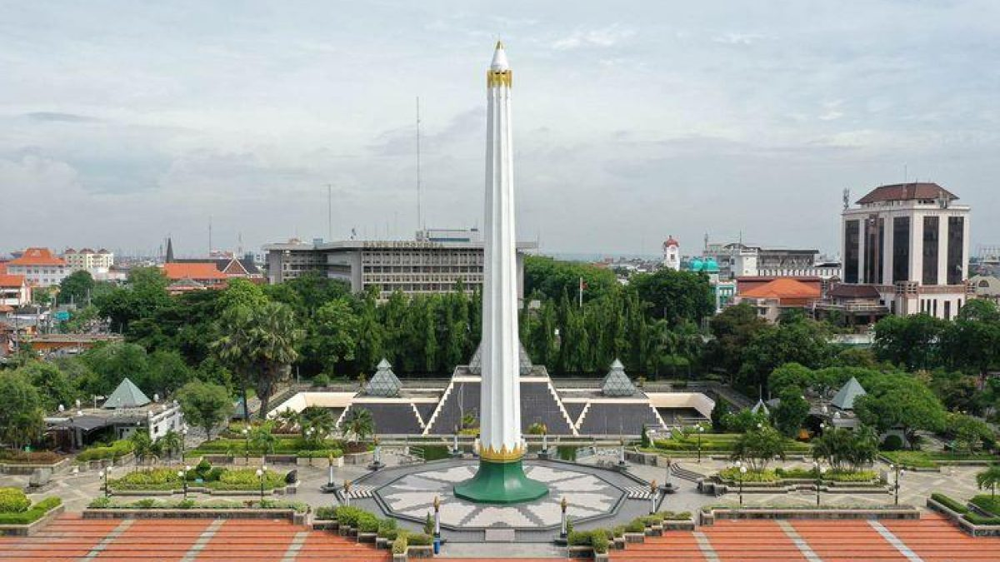

Tugu Pahlawan
Tugu Pahlawan is one of Surabaya's most iconic landmarks and a symbol of Indonesia's struggle for independence. It has a tall monument surrounded by a green open area. Visitors can also explore the nearby Museum Sepuluh Nopember to learn about the history of the Battle of Surabaya.